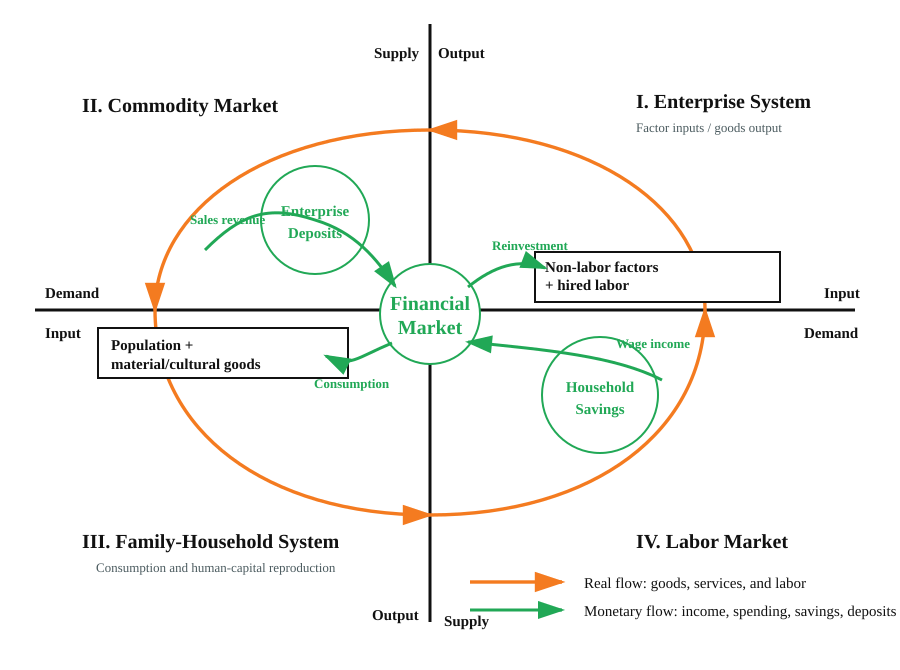
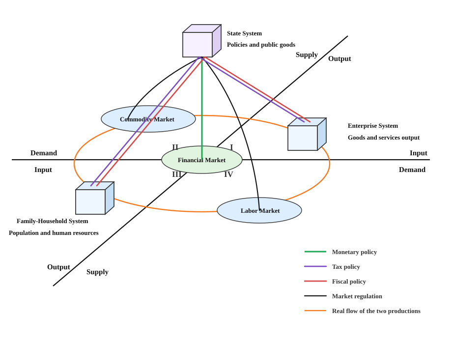

Synthesis Political Economy
The Grand Tripartite: Separation and Asymmetric Checks among Family-Household Rights, Enterprise Rights, and State Power
Synthesis Political Economy is an emerging theoretical framework that analyzes modern society through the asymmetric relationship among family-household rights, enterprise rights, and state power.
The framework argues that market economies cannot be fully understood through firms, markets, and prices alone. They must also be analyzed through the long-term balance between productive forces and life-reproduction capacity, and through the asymmetric checks and balances among family-household rights, enterprise rights, and state power.
Its central proposition is that life-reproduction capacity stands above productive forces. Population reproduction, human development, care, education, and intergenerational continuity are not secondary by-products of economic growth. They are the conditions under which any productive system can remain socially meaningful and historically sustainable.
Two Theoretical Models
The first model describes the dialectical cycle between enterprise productive capacity and family life-reproduction capacity. Enterprises produce goods and services, while families reproduce population, labor power, and human capital. Commodity markets, labor markets, and financial flows connect these two forms of production. When productive forces systematically overwhelm life-reproduction capacity, crises appear as insufficient demand, family stress, demographic decline, and social fragmentation.

The second model introduces the state. Modern society is interpreted as a triadic structure composed of family, enterprise, and government. Families pursue happiness and life reproduction through labor income; enterprises pursue profit through the organization of productive factors; governments pursue the long-term consolidation of power through taxation, public goods, law, and regulation.

Core Terms
| Chinese | English | Definition |
|---|---|---|
| 合三为一政治经济学 | Synthesis Political Economy | Main project title. |
| 大三权 | The Grand Tripartite | The triadic order of family-household rights, enterprise rights, and state power. |
| 家庭权利 | Family-Household Rights | Rights and capacities of households as units of life reproduction, care, consumption, education, and human development. |
| 企业权利 | Enterprise Rights | Rights rooted in productive organization, property, innovation, and profit-seeking. |
| 政府权力 | State Power | Power rooted in taxation, coercion, public goods, law, and regulation. |
| 生命力 | Life-Reproduction Capacity | Population reproduction, human development, labor-power formation, and intergenerational continuity. |
| 生产力 | Productive Forces | Technology, productive organization, capital, labor, and the production of goods and services. |
| 非对称制衡 | Asymmetric Checks and Balances | A non-symmetrical institutional structure of mutual constraint among the three actors. |
How to Read This Site
This website is currently Chinese-first. English abstracts are included in the article pages, and fuller English materials will be developed gradually. International readers may begin with the following pages:
- Introduction: Two Core Models and the Analytical Framework
- Theory Series
- AI Disaster: When Productive Forces Overwhelm Life-Reproduction Capacity
An Open Research Program
This project is not presented as a finished doctrine. It is an open research program. Its core propositions are defended, but they remain open to criticism, empirical challenge, competing interpretation, and theoretical refinement.
Criticism is welcome, especially on conceptual clarity, empirical validity, translation, source reliability, and the applicability of the “Grand Tripartite” framework to different countries and institutional systems.